제안 시연용 대시보드
운영 담당자는 현재 계측값과 경고를, 설비 담당자는 상별 센서 변화와 근거를, 관리자는 예측 기반 비용·탄소와 주간 요약을 확인하도록 구성했습니다. 운영현황 → 설비분석 → 예측·비용 → 고장진단 → 주간리포트의 다섯 화면을 제공하고, 공통 기간·모듈·집계·재생 필터와 페이지 하단 데이터 검색을 배치했습니다.
원본 localtime 순서의13모듈5초 관측을 SSE로 전달합니다.20x에서는5초의 기록 시간이0.25초의 목표 재생 간격에 대응합니다. 원본 기록 시각과 UTC 수신 시각을 함께 저장하며 SQLite 로그는 새로고침·서버 재시작 후에도 남습니다. 재생이 구간 끝에 도달하면 정지하고 다시 재생하면 같은 구간을 처음부터 시작합니다.
실제 의심 구간4개·일반 운전1개와, 원본을 복사해 메모리에서 변형하는 여섯 유형의 증강 사례를 제공합니다. 증강은 별도 배지와 알림에 표시하며 원본 파일은 바뀌지 않습니다.
React 화면


원본과 전처리
| 항목 | 확인 결과 |
|---|---|
| 기간·간격 | 2024-12-01 00:00:00 ~2025-04-30 00:00:00, 모듈별5초 연속. 마지막4월30일 관측 한 점은 완료 시간 학습에서 제외. |
| 필드 | 모듈, Unix timestamp, localtime, operation; 상/선간전압6개, 상전류3개, activePower, 역률3개, reactivePowerLagging, accumActiveEnergy. |
| 결측·시계 | 전수19필드 결측0. Unix 시계의 오프셋 변화·중복에 영향을 받지 않도록14자리 localtime을 명시 파싱. 시간대 자동변환 없음. |
| 모듈 범위 | PM-3·분쇄기·호이스트·건조기·분전반 등이 함께 포함된13계측 모듈. 설비 계층 미확인으로 공장 총소비량 또는 단일 설비 데이터라고 확정하지 않음. |
| 시간 집계 | 720관측이 있는 완료1시간을 사용. 전력량=P×5/3600의 합; 센서값은 시간 평균, 장기 전력량은 합계. 일/주/월은 관측 개수와 완전 여부 표시. |
| 스케일링 | 학습 구간에서만 zscore·robust·minmax·중심 잔차 등을 적합하고 예측을 원단위로 역변환. fold별 scaler/axis, native 저장 예측 재생을 감사. |
예측 최적화와 최종 평가
ARIMA·XGBoost·Ridge·과거 평균, 공개 논문 기반 PatchTST·iTransformer와 사전학습 Chronos를 비교했습니다. 통계·ML103설정, PatchTST8설정, iTransformer9설정, Chronos76설정으로 총196설정입니다. 신경망은 학습률 감소와 검증 손실 수렴을 기준으로 종료했으며 임의24epoch 제한을 사용하지 않았습니다.
선택 원점은2월15·22·25일이며 각각745시간 경로의 후반505시간 MAE로 선택했습니다. 겹치는 검증 경로는 독립 표본으로 취급하지 않습니다.3월29일 원점의 내부 평가를 별도로 두고, 전체 설정과 모델을 동결한 뒤4월30일 원점부터745시간 예측 중5월10일~5월31일00:00의505개 관측으로 최종 평가했습니다.
검증 선택은 iTransformer:72시간 입력, zscore, Huber,64차원·2층입니다. 검증 MAE76.2075로 과거 평균76.2370보다0.0295kWh(약0.039%) 낮습니다. 이 차이만으로 변동 예측력이 확보되었다고 보기 어렵습니다.
| 모델 | May MAE | RMSE | R² | 편향(예측−실제) |
|---|---|---|---|---|
| 과거 수준 기준선 | 89.008 | 109.470 | -0.3893 | 57.947 |
| 정규화 ARIMA | 89.031 | 109.495 | -0.3899 | 57.994 |
| 정규화 Ridge | 89.032 | 109.496 | -0.3899 | 57.996 |
| 정규화 XGBoost | 89.120 | 109.592 | -0.3924 | 58.177 |
| 재학습 PatchTST | 89.002 | 109.605 | -0.3927 | 57.075 |
| 재학습 iTransformer · 검증 선택 | 89.115 | 109.628 | -0.3933 | 58.147 |
| 고정 Chronos-2 | 88.859 | 109.306 | -0.3851 | 57.624 |
실시간 재생의 향후24시간 예측은 해당 시점 이전 완료 시간만 적합하는 별도 과거 평균 기준선입니다.4월까지 학습한 iTransformer를3월 재생에 적용해 미래 정보를 쓰지 않습니다. 고정 May 비교와 운영 원점24시간 그래프를 분리했습니다.
과거 수준 기준선 · May505 실제값/예측값
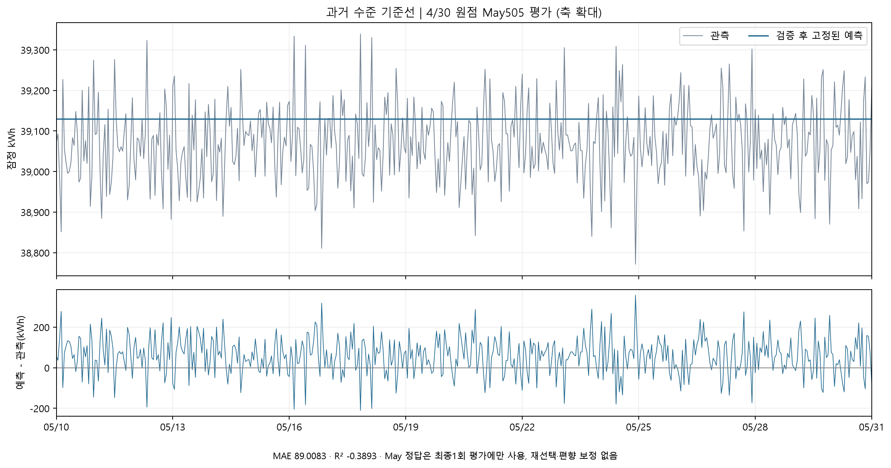
SVG 원본정규화 ARIMA · May505 실제값/예측값
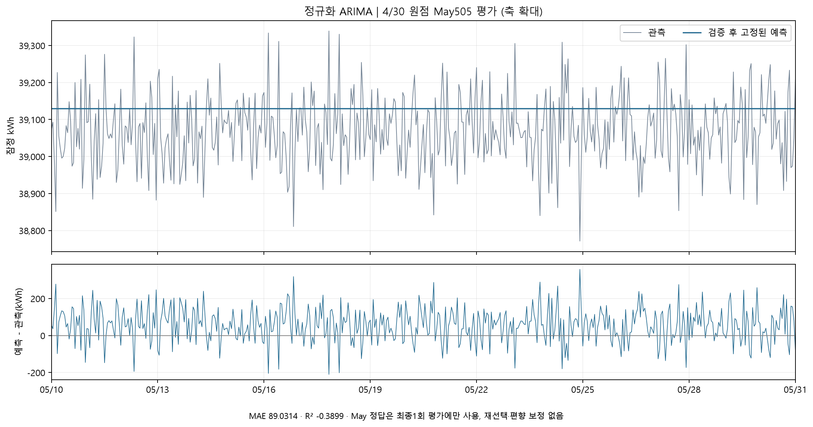
SVG 원본정규화 Ridge · May505 실제값/예측값
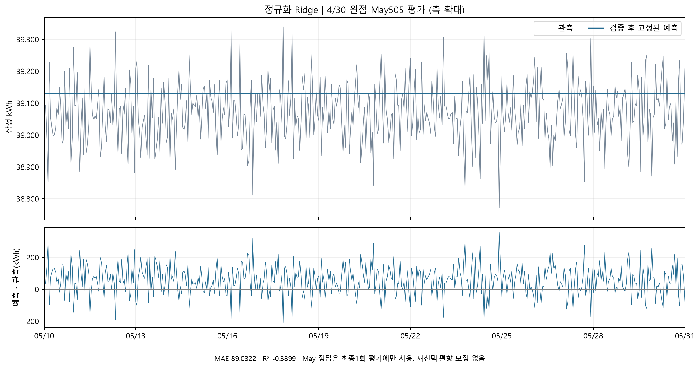
SVG 원본정규화 XGBoost · May505 실제값/예측값
SVG 원본재학습 PatchTST · May505 실제값/예측값
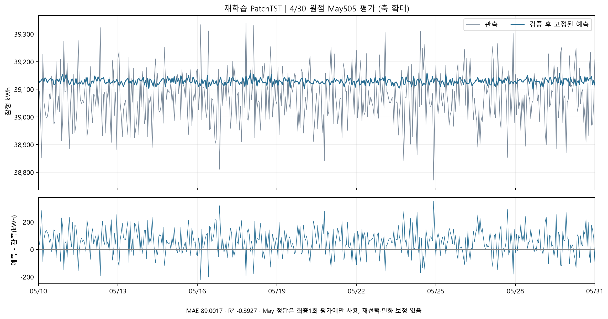
SVG 원본재학습 iTransformer · May505 실제값/예측값
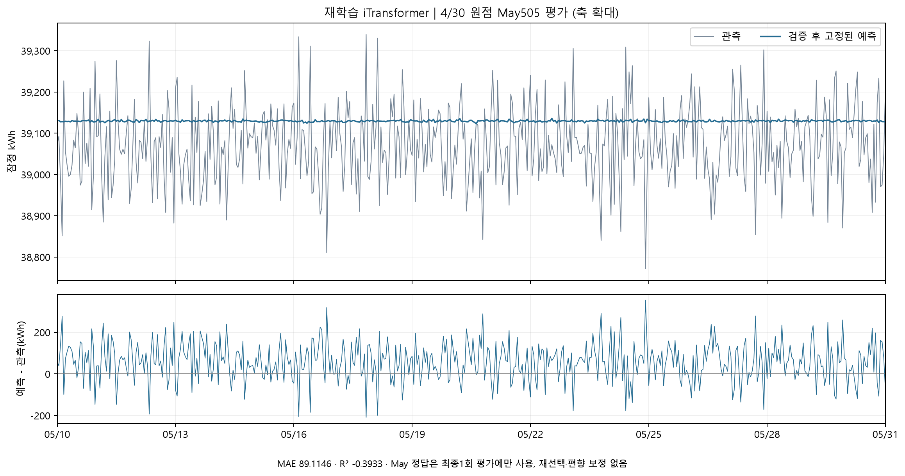
SVG 원본고정 Chronos-2 · May505 실제값/예측값
SVG 원본여섯 유형 검사와 고장 의심 후보
부하불균형·무효전력급증·역률급감·비정상패턴·야간이상가동·전류만증가를 모두 검사했습니다.12월 표본으로 모듈/시간대 기준선·AE·IF·증강 분류기를 학습하고1월로 임계값·epoch·분류기를 선택했으며2~4월을 보정 이후 시험으로 사용했습니다. 전수33,696,013행에 여섯 규칙과 AE를 적용했고, IF·분류기는187,200개 균등 표본과180개 후보 최대점에 적용했습니다. 화면의 조회 구간은 IF·분류기까지 전체 시점을 다시 검사합니다.
조건 검사에는 상전류 불균형, Q/P, 상역률, 전력/VI·역률의 모듈별 경험 배율 잔차, 시간대별 부하 변화를 사용합니다. operation은 모두1이므로 야간 operation=1만으로 고장 알람을 만들지 않았습니다. 실제 데이터의 큰 상전류 불균형을 단순 고정 임계값으로 모두 고장 취급하지 않습니다.
| 원본 연속 후보 | 시각(localtime) | 관측 | 해석 |
|---|---|---|---|
| 17(6호기) | 3/13 19:45:05~15 | 3점 | 강한AE·역률 급감 유사도, 미확정 |
| 15(예비건조기) | 2/28 04:38:20~30 | 3점 | 강한AE 후보, 야간이라는 이유만으로 야간고장 확정하지 않음 |
| 17(6호기) | 2/19 03:04:00~10 | 3점 | 강한AE 후보, 미확정 |
| 5(좌측분전반) | 2/26 06:47:00~10 | 3점 | 약한PF 규칙 후보·AE/IF 미경보, 오탐 가능 검토 |
실제 삽입 시각·정답 라벨이 없어 안내받은 약6개를 모두 찾았다고 주장하지 않습니다. 연속 후보4개와 추가 검토 최대점180개를 제공하고 유형별 미발견 조건도 기록합니다. 모델 점수 또는 합성 분류 유사도를 실제 고장 확률로 표시하지 않습니다.
합성 증강 평가의 범위
시간상 분리된 기준표본 학습3000개·검증1500개·시험2000개를 각각 미변형+여섯 변형의7클래스로 확장했습니다. 학습21,000개(변형18,000), 검증10,500개(변형9000), 시험14,000개(변형12,000)이며 같은 기준표본이 여러 클래스에 반복됩니다. 미변형 표본도 확인된 정상 정답은 아닙니다.
| 모델 | 합성 Recall | 합성 F1 | 원본 검사 범위 |
|---|---|---|---|
| 모듈·시간대 조건 검사 | 0.950 | 0.9738 | 전수 |
| Autoencoder | 0.715 | 0.8337 | 전수 |
| Isolation Forest | 0.036 | 0.0689 | 표본·후보 구간 |
| 합성 형태 분류 Random Forest | None | None | 표본·후보 구간 |
| 합성 형태 분류 XGBoost | None | None | 표본·후보 구간 |
증강 XGBoost 분류기의 합성7클래스 macroF1은0.9794입니다. 규칙 Recall94.95%, AE71.49%, 보수적인 IF3.57%는 합성 변형 탐지에 대한 수치이며 실제 고장 precision/recall이 아닙니다.
권장 구성은 맥락 규칙+AE 병행입니다. 규칙은 유형별 근거를 설명하고 AE는 원본의 센서 관계 이탈을 보완합니다. IF는 이번 고정 임계값에서 합성 누락이 많아 보조 점수로 두고, 증강 분류기는 원인 후보 안내에 사용합니다. 운영 알람은3연속5초 관측 후 발행하며 실제 라벨 확보 후 임계값·알람 지연을 다시 검증해야 합니다.
power_factor_drop_0061 · power_factor_drop_0061
sensors
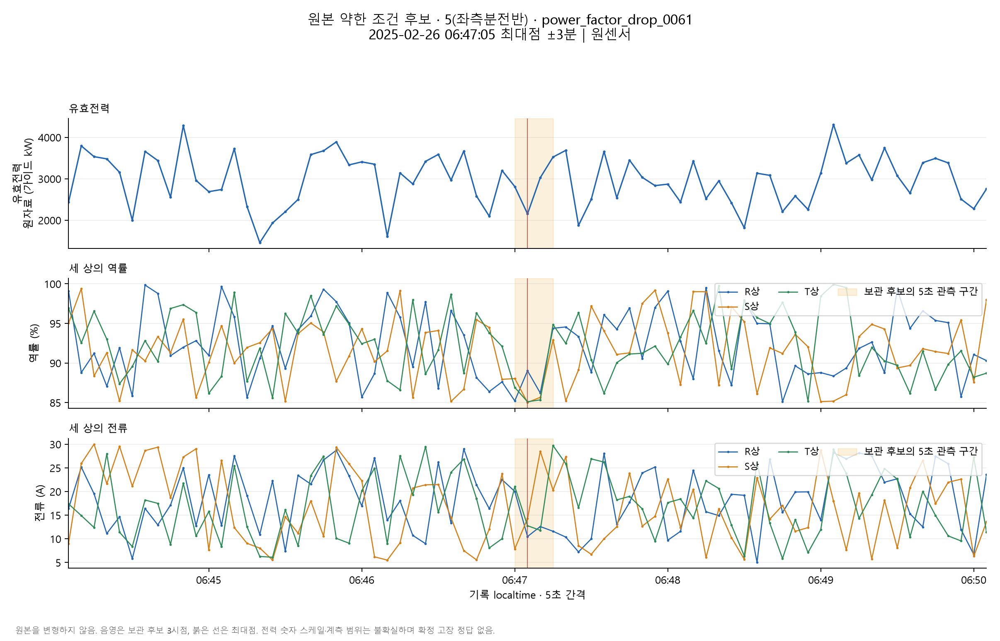
SVG 원본rules
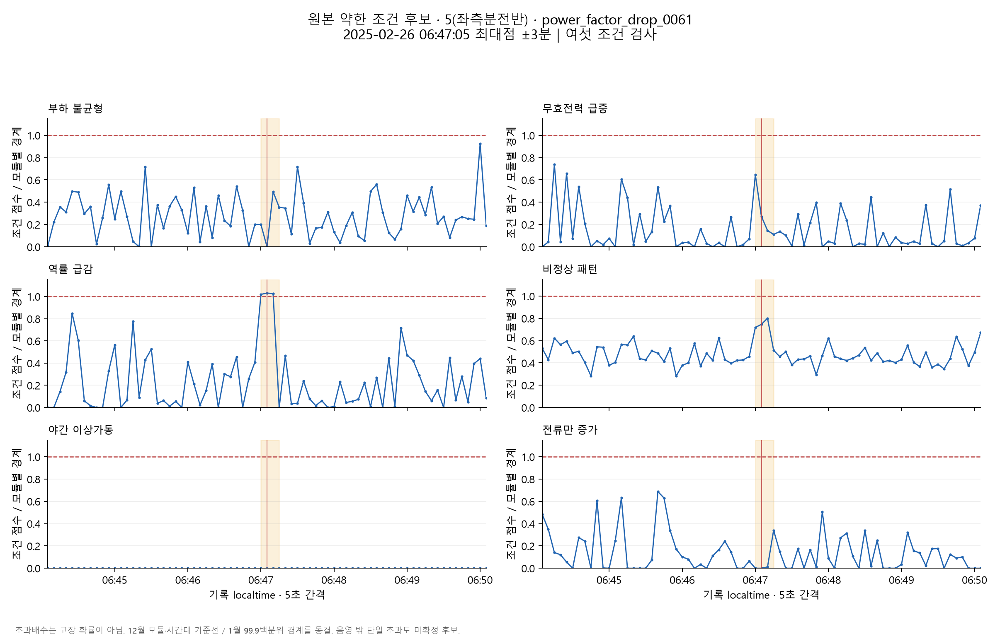
SVG 원본autoencoder
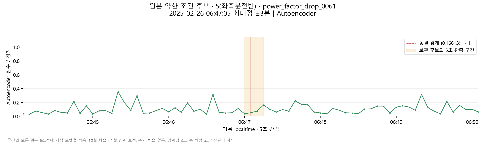
SVG 원본isolation_forest
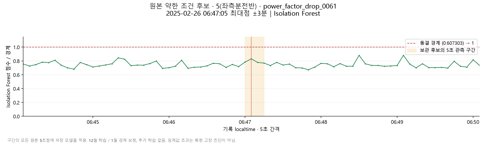
SVG 원본abnormal_pattern_0091 · abnormal_pattern_0091
sensors
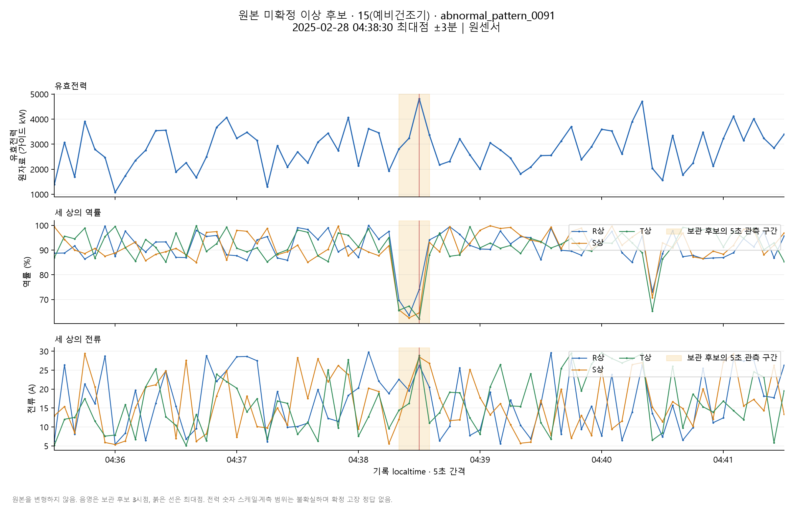
SVG 원본rules
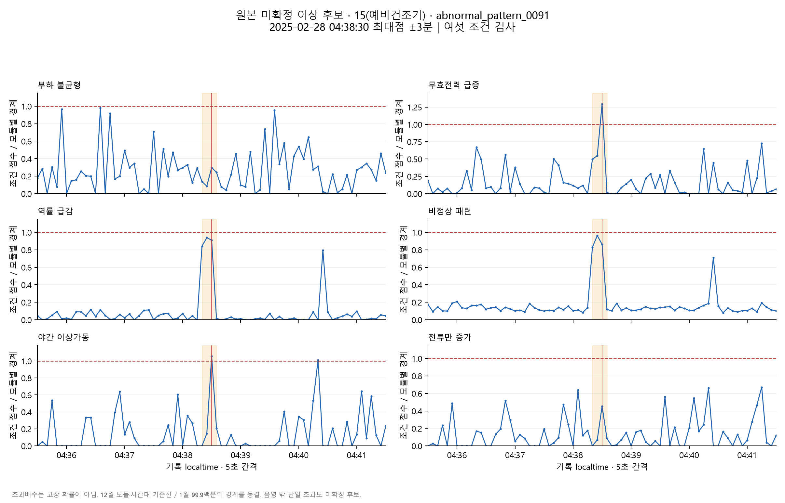
SVG 원본autoencoder
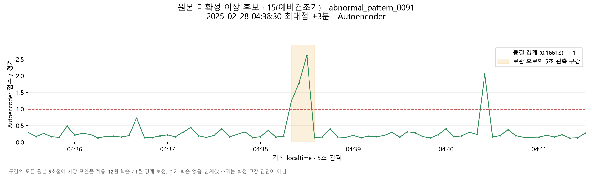
SVG 원본isolation_forest
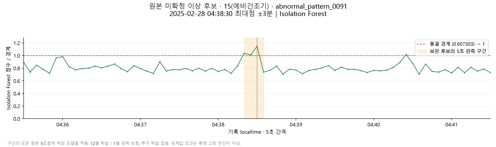
SVG 원본abnormal_pattern_0092 · abnormal_pattern_0092
sensors
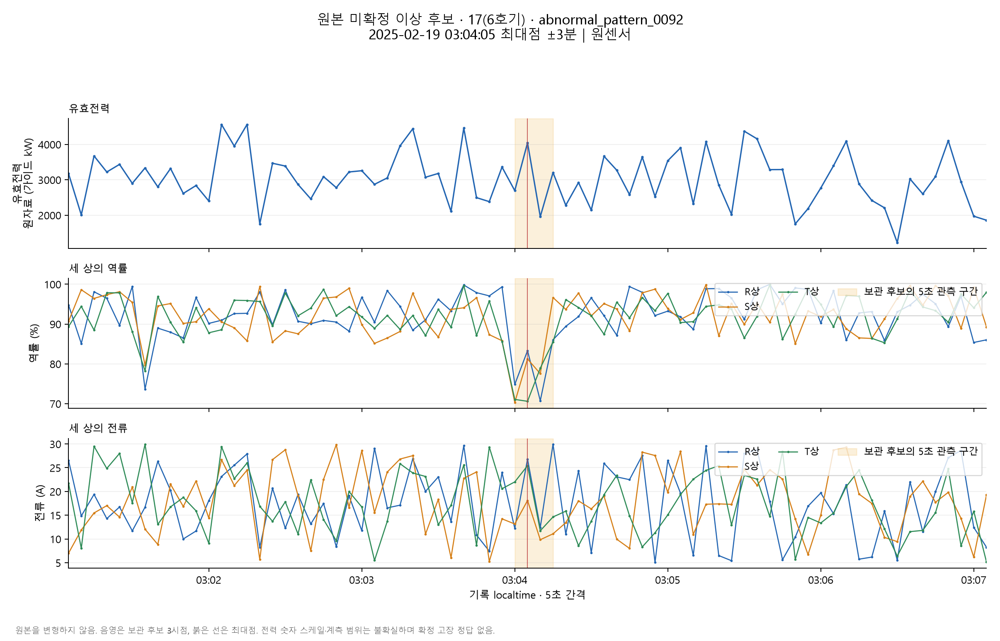
SVG 원본rules
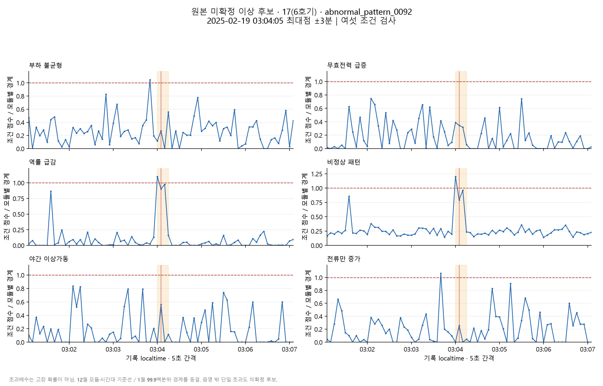
SVG 원본autoencoder
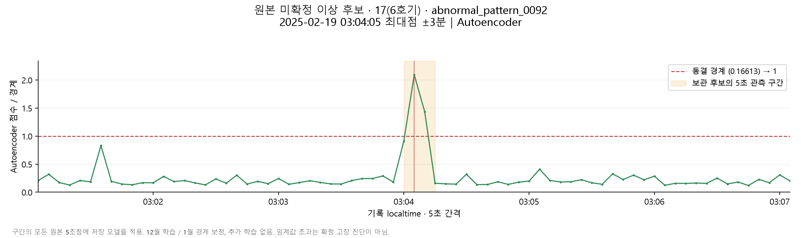
SVG 원본isolation_forest
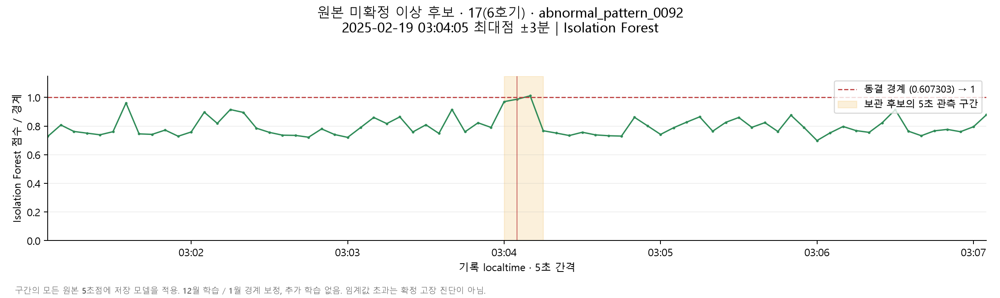
SVG 원본abnormal_pattern_0093 · abnormal_pattern_0093
sensors
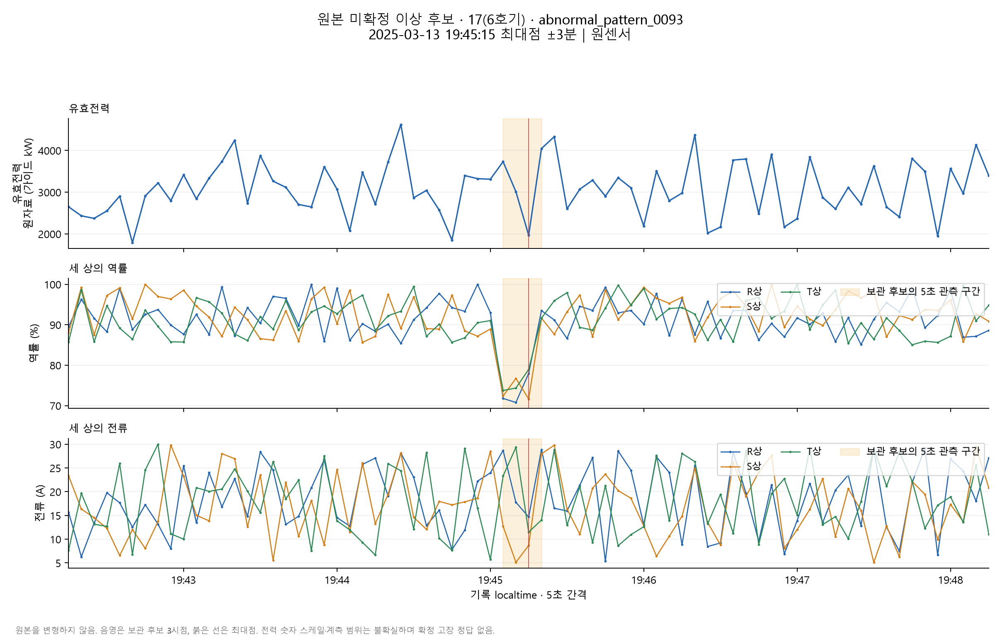
SVG 원본rules
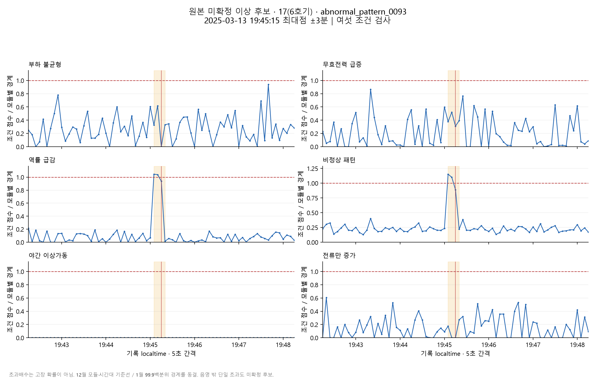
SVG 원본autoencoder
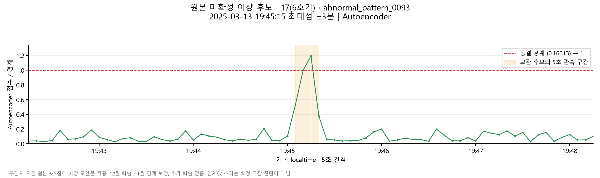
SVG 원본isolation_forest
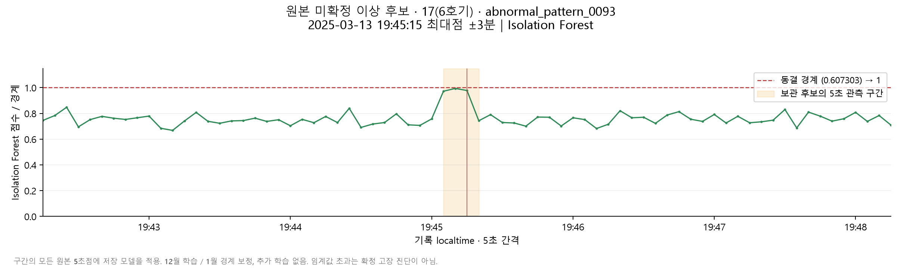
SVG 원본Slack·GPT·데이터 검색
Slack은 서버 메모리의 HTTPS Incoming Webhook으로 후보 근거·모듈·기록 시각·원본/증강 표시를 전달합니다. 고유 알람ID로 중복을 방지하고, 실패는 최대3회 지수 간격으로 재시도하며 확인 처리한 후보는 대기 전송에서 제외합니다. 웹훅 미설정이므로 실제 Slack 전달 성공은 아직 확인하지 않았습니다.
주간 서비스는 먼저7일의 완료 시간 통계와 예측 품질·저장 후보를 서버에서 계산하고, 승인한 항목만 GPT-5 mini의 Responses API JSON schema로 보고서를 작성합니다. 데이터 검색은 질문·모듈·재생 시각을 허용 검색 계획으로 바꾼 뒤 서버에서 센서 요약·후보·예측 평가·설비 목록을 조회합니다. SQL/코드 실행은 허용하지 않습니다.
사용자가 통계·질문 전송을 승인했으며 원본 센서 행·CSV·인증정보를 보고서 입력으로 전송하지 않습니다. 가이드 이미지에서 메모리로 판독한 키 후보가 모델 접근 인증401에 실패하여 채택하지 않았습니다. OCR 판독 오류와 실제 키 상태를 구별할 수 없으므로 유효 키라고 단정하지 않습니다. 현재 화면은 로컬 통계·검색 상태를 정확히 표시하며, 유효한 서버 키와 Slack 웹훅 설정이 남아 있습니다.
키는 파일·화면·로그에 복사하지 않았습니다. 모델은gpt-5-mini로 고정, 요청store:false, 주간 일정은KST 요일·시각과 모듈을 저장하고 서버 실행 중에만 작동합니다.
검증·재실행·보존
백엔드 로컬 통합 35개 검사 상태: passed. 실제 모듈 합계·시계 분리·시점 가용성·모듈별 독립 예측·7모델505관측·3연속알람·일시정지·6증강유형·증강상세 재현·주간168시간·검색·일정·웹훅 URL 제한·출처 제한을 확인했습니다. 외부 Slack/GPT 성공을 모의 테스트 성공으로 대체하지 않았습니다.
예측은339개 정규화/축 검사·14개 저장 경로 재생과 May 전후35개 모델/예측 파일SHA 보존을 통과했습니다. 고장180개 원본 최대점 재생 오차0, 후보4구간의292개 원본 시점 점수·16개 그림/32포맷 검증이 통과했습니다. 원본SHA 3b4e1ff2125ca64612837530a8612fa7f044f398e508e00026097fc788d0dce5와 크기·수정시각을 보존했습니다.
.\launch.ps1 # http://127.0.0.1:8099 .\stop.ps1
로컬 제안 시연용.127.0.0.1에만 수신하며 외부 공개·업로드하지 않았습니다. 실제 운영에는 설비 계층·단위 검증, 센서 브로커, 운영 권한과 실제 고장 라벨 검증이 필요합니다.
연구·API 근거
패치 기반 Transformer는 PatchTST 원논문, 변수 토큰 기반 모델은 iTransformer 원논문, 사전학습 비교는 Chronos 원논문에 근거했습니다. 이 논문들의 공개 벤치마크 성과가 이 데이터의 성능을 보장하지 않습니다.
연동은 GPT-5 mini 공식 모델 문서·Responses 구조화 출력 문서·Slack Incoming Webhook 공식 문서를 참고했습니다.